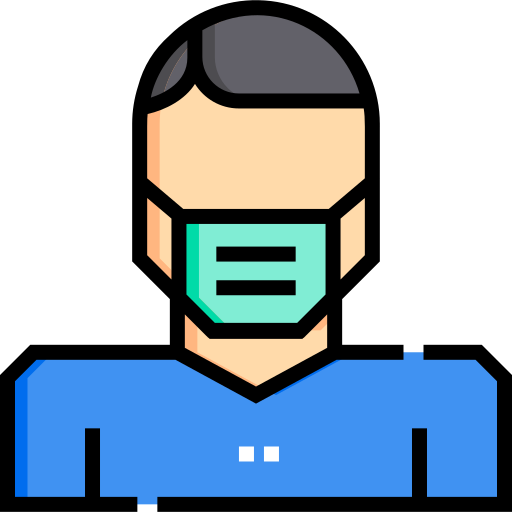

 <ion-app>
  <ion-split-pane contentId="main-content">
    <ion-menu contentId="main-content" type="overlay">
      <ion-content>
        <ion-list id="inbox-list">
          <ion-list-header>Blue C<ion-icon name="compass-outline"></ion-icon>pass</ion-list-header>
          <!-- <ion-note>hi@ionicframework.com</ion-note> -->
          <ion-item [routerLink]="['/login']">
            <!-- <ion-avatar slot="end">
              
            </ion-avatar> -->
            <ion-icon slot="end" size="large" name="person-circle" (click)="test()"></ion-icon>
            <ion-label>
              <h3><b>นายศรีครัง รูสมิแล</b></h3>
              <p>เจ้าหน้าที่โรงพยาบาล</p>
            </ion-label>
          </ion-item>

          <ion-menu-toggle auto-hide="false" *ngFor="let p of appPages; let i = index">
            <ion-item (click)="selectedIndex = i" routerDirection="root" [routerLink]="[p.url]" lines="none" detail="false" [class.selected]="selectedIndex == i">
              <ion-icon slot="start" name="{{p.icon}}"></ion-icon>
              <ion-label>{{ p.title }}</ion-label>
            </ion-item>
          </ion-menu-toggle>
        </ion-list>
      </ion-content>
    </ion-menu>
    <ion-router-outlet id="main-content"></ion-router-outlet>
  </ion-split-pane>
</ion-app>
